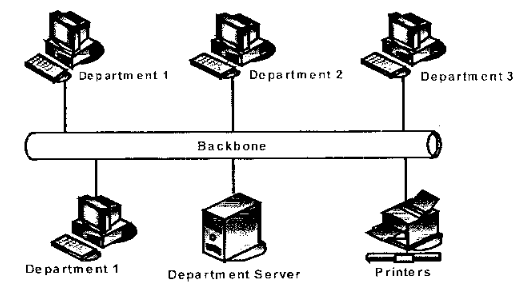

INTRODUCTION TO INFORMATION COMMUNICATION TECHNOLOGY
Exam Code: 2920/101
Duration: 3 hours
Period: November 2014
Outline three advantages of using materials stored on a CD ROM over the Internet. Offline Accessibility: CD-ROM materials are accessible offline, meaning users do not require an active internet connection to access the stored content. This is advantageous in areas with limited or no internet access, or when consistent access is needed without relying on network availability. Data Security and Control: Materials on a CD-ROM are less vulnerable to online security threats such as hacking or data breaches compared to content accessed over the internet. The data is physically stored and controlled by the user, providing a higher degree of security and privacy for sensitive information. Permanent and Stable Access: Once data is written on a CD-ROM, it is generally permanent and stable, assuming the disc is properly stored and handled. Unlike internet content which can be altered, removed, or become unavailable due to website changes or server issues, CD-ROM content remains consistent and accessible over a long period. Joseph aspires to motivate students through public speech. Describe three communication skills he should possess in order to achieve his objective. Verbal Communication and Clarity: Joseph must possess strong verbal communication skills, which include clear articulation, appropriate pacing, and varied vocal tone to maintain audience engagement. Clarity in language is essential to ensure his message is easily understood by the students. He should avoid jargon or complex terms and use precise language to convey his points effectively. A confident and engaging vocal delivery is crucial for motivating an audience through speech. Non-Verbal Communication and Body Language: Effective public speaking relies heavily on non-verbal cues. Joseph needs to utilize positive body language, including maintaining eye contact with the audience, using purposeful gestures, and having confident posture. These non-verbal elements enhance his message, project confidence, and establish a connection with the students. His body language should reinforce his verbal message and contribute to a compelling and motivational presentation. Audience Engagement and Adaptability: To motivate students, Joseph must be able to engage his audience actively. This involves understanding the students' interests and tailoring his speech to resonate with them. He should incorporate techniques to maintain their attention, such as storytelling, humor, and rhetorical questions. Adaptability is also crucial; Joseph should be able to adjust his delivery and content based on the audience's reactions and the overall atmosphere, ensuring his motivational message is effectively received and impactful. Mamlaka TTI received computers of varied specifications from well-wishers. The school computer technician is required to install necessary software in the computers. Outline four factors that should be considered before installation. Software Compatibility with Hardware: Ensure that the software to be installed is compatible with the hardware specifications of each computer, including processor type, RAM capacity, storage space, and operating system. Incompatibility can lead to software malfunction, system instability, or failure to install altogether. Checking system requirements of the software against computer specifications is crucial. Operating System Requirements: Verify that the software is designed to run on the operating system installed on the computers (e.g., Windows, macOS, Linux). Software designed for one operating system may not function or install correctly on another. Confirming OS compatibility prevents installation errors and ensures proper software operation. Software Licensing and Legality: Confirm that the school has the necessary licenses for all software to be installed, ensuring legal compliance and avoiding copyright infringement. For donated software, verify the licensing terms and conditions to ensure they permit installation on multiple computers. Proper licensing is essential for legal and ethical software use. Disk Space and System Resources: Check that each computer has sufficient free disk space and system resources (like RAM and processing power) to accommodate the software installation and its operational needs. Insufficient resources can result in slow performance, installation failures, or system crashes. Assessing resource requirements beforehand prevents performance issues and ensures smooth software operation. In the process of installing software in one of the computers, the operation aborted. Explain two possible causes for the abortion. Corrupted Installation Files: The software installation files themselves may be corrupted or incomplete. This can occur during download, copying, or storage of the installation media. Corrupted files can lead to critical errors during the installation process, causing it to abort as necessary components are missing or damaged. System Incompatibility or Resource Conflicts: The computer may not meet the minimum system requirements for the software, or there might be conflicts with existing hardware or software components. Incompatibility issues, such as insufficient RAM, incompatible operating system version, or conflicts with pre-existing software, can cause the installation to fail and abort to prevent system instability or damage. Assuming that you have been approached by a large company as an ICT expert to assist in the procurement of software for the firm. Outline three factors that you should consider when selecting the software. Functionality and Features: Evaluate if the software offers the required functionality and features necessary to meet the company's specific business needs and operational requirements. The software must effectively perform the tasks it is intended for and provide the tools and capabilities to enhance productivity and efficiency within the organization. Scalability and Compatibility: Consider the software's scalability to accommodate the company's future growth and increasing demands. Ensure it is compatible with the existing IT infrastructure, operating systems, and other software applications used within the firm to ensure seamless integration and avoid compatibility issues. Cost and Licensing: Analyze the total cost of ownership, including the initial purchase price, licensing fees (per user, per device, subscription), maintenance costs, and potential upgrade expenses. Choose a licensing model that aligns with the company's size and usage patterns, ensuring cost-effectiveness and compliance with software licensing agreements. Outline four main characteristics of the fourth generation computers. Microprocessor-Based: Fourth generation computers are characterized by the use of microprocessors, where thousands of integrated circuits were integrated onto a single silicon chip. This led to significant reductions in size and cost while increasing processing power and efficiency. Very Large Scale Integration (VLSI): VLSI technology was prominent, allowing for the creation of highly complex circuits in smaller spaces. This miniaturization further enhanced the performance and capabilities of computers, making them more powerful and compact. Personal Computers (PCs): The fourth generation saw the rise of personal computers, making computing accessible to individuals and small businesses. These computers were smaller, more affordable, and user-friendly compared to previous generations, leading to widespread adoption. Graphical User Interfaces (GUIs) and Networking: Fourth generation computers introduced graphical user interfaces, making them more interactive and user-friendly. Networking technologies also advanced, enabling computers to connect and share resources, laying the foundation for modern computer networks and the internet. An ICT firm intends to recruit the following personnel through an advertisement. Outline two roles for each personnel that are likely to be included in the advert. computer operator; Computer Operator: System Monitoring and Maintenance: A computer operator is responsible for monitoring the performance of computer systems and networks, overseeing routine maintenance tasks, and ensuring systems are running efficiently and without errors. This includes checking system logs, monitoring hardware status, and performing scheduled system checks. Data Backup and Recovery: Operators manage data backup processes, ensuring regular backups are performed according to schedule, and are responsible for data recovery procedures in case of data loss or system failures. This involves using backup software and managing storage media for backups. An ICT firm intends to recruit the following personnel through an advertisement. Outline two roles for each personnel that are likely to be included in the advert. software engineer; Software Engineer: Software Development and Design: A software engineer is responsible for designing, developing, and testing software applications. This includes writing code, creating software architecture, and collaborating with teams to build functional and efficient software solutions based on project requirements. Software Maintenance and Updates: Software engineers are also tasked with maintaining existing software systems, debugging issues, implementing updates, and improving software performance. They ensure software remains functional, secure, and up-to-date by addressing bugs, releasing patches, and enhancing features as needed. An ICT firm intends to recruit the following personnel through an advertisement. Outline two roles for each personnel that are likely to be included in the advert. network administrator. Network Administrator: Network Infrastructure Management: A network administrator is responsible for setting up, configuring, and maintaining the organization's network infrastructure, including routers, switches, firewalls, and cabling. This involves ensuring network connectivity, performance, and security for all users and devices within the network. Network Security and Troubleshooting: Network administrators implement and manage network security measures, such as access controls, intrusion detection systems, and VPNs, to protect against unauthorized access and cyber threats. They also troubleshoot network issues, diagnose problems, and resolve connectivity or performance issues to ensure uninterrupted network services. Jumbo Training Institute would like to develop an ICT policy in line with the performance contract requirement. Outline four issues likely to be incorporated in the policy. Acceptable Use of ICT Resources: The policy should define acceptable and unacceptable uses of the Institute's ICT resources, including computers, internet access, email, and software. This includes guidelines on appropriate online behavior, ethical use of resources, and prohibited activities such as illegal downloads or accessing inappropriate content. Data Security and Privacy: The policy must address data security measures to protect sensitive information, including student and staff data. It should outline procedures for data handling, storage, access controls, and measures to prevent data breaches and ensure compliance with data protection regulations. Privacy guidelines for personal data and communications should also be included. Network and Internet Usage: Guidelines for network and internet usage are essential, covering aspects such as bandwidth usage, security protocols for accessing the network, and responsible online conduct. The policy should specify rules regarding downloading, uploading, and sharing content, as well as measures to prevent misuse of network resources and ensure network security. Software and Hardware Management: The ICT policy should outline procedures for software installation, licensing, and usage, ensuring compliance and preventing unauthorized software. It should also address hardware management, including responsible use of equipment, maintenance guidelines, and procedures for reporting hardware issues. Standardizing software and hardware management promotes efficiency and reduces IT support issues. Define the term computer network. A computer network is a group of interconnected computer systems and other computing hardware devices that are linked together via communication channels to facilitate communication and resource sharing among a wide range of users. State two differences between an Intranet and the Internet. Intranet: An intranet is a private network, typically used within an organization, that is accessible only to authorized users, such as employees. It is designed for internal communication, data sharing, and access to company-specific resources and applications. Security is a primary focus, with access controlled through firewalls and authentication systems. Internet: The Internet is a global public network that connects billions of devices worldwide. It is open to anyone with an internet connection and provides access to a vast amount of information, websites, and online services. Security is a concern, but it is inherently a public and open platform, designed for broad accessibility and global communication. Differences: Accessibility: An Intranet is private and restricted to authorized users within an organization, while the Internet is public and accessible to anyone globally. Purpose: Intranets are used for internal organizational communication and resource sharing, whereas the Internet is used for global communication, information access, and a wide range of public online services. Explain the term Information Communication Technology (ICT). Information Communication Technology (ICT) is the infrastructure and components that enable modern computing. It encompasses all digital technology used to handle communications and information. This includes hardware, software, networks, and the media used for the collection, storage, processing, transmission, and presentation of information in electronic form. Explain two ways in which computers are used in education. Facilitating Online Learning and Distance Education: Computers enable online learning platforms and distance education programs, allowing students to access educational resources and courses remotely. This expands access to education beyond traditional classroom settings, offering flexibility and convenience for students to learn from anywhere with an internet connection. Online learning platforms provide course materials, interactive lessons, and communication tools for students and instructors. Enhancing Interactive Learning and Engagement: Computers are used to create interactive learning experiences through educational software, simulations, and multimedia resources. These tools can make learning more engaging and effective by providing visual aids, interactive exercises, and personalized learning paths. Interactive content can cater to different learning styles and improve student comprehension and retention of information. Describe each of the following computer devices citing one area of application for each of them. digitizer; Digitizer: A digitizer, also known as a graphics tablet, is an input device that allows users to draw images and graphics directly into a computer. It typically consists of a flat surface and a stylus, which is used to draw or write on the surface. The movements of the stylus are translated into digital signals and input into the computer. Area of Application: Graphic Design and Digital Art: Digitizers are widely used in graphic design, digital art, and illustration. Artists and designers use digitizers to create digital paintings, illustrations, and graphic designs with more natural and precise control than a mouse. They are essential tools for tasks like photo editing, digital sculpting, and creating detailed artwork. Describe each of the following computer devices citing one area of application for each of them. bar coding. Bar Coding: Bar coding is a method of representing data in a visual, machine-readable form. A barcode consists of a series of parallel lines of varying widths and spacing that represent alphanumeric data. Barcode scanners are used to read these codes and convert them into digital data for computer processing. Area of Application: Retail and Inventory Management: Bar coding is extensively used in retail and inventory management systems. In retail, barcodes are printed on product packaging to track sales, manage inventory levels, and facilitate checkout processes at point-of-sale (POS) systems. In inventory management, barcodes are used to track stock movement, manage warehouse inventory, and streamline supply chain operations, improving efficiency and accuracy in tracking goods. Susana is experiencing fatigue and eye strain as a result of using a computer monitor for a long period. State three aspects of the monitor that she should consider in order to take care of her health. Brightness and Contrast Settings: Susana should adjust the brightness and contrast settings of her monitor to levels that are comfortable for her eyes and appropriate for the ambient lighting conditions. Excessive brightness or contrast can cause eye strain and fatigue. Reducing brightness in dimly lit environments and adjusting contrast for clarity can help minimize eye discomfort. Refresh Rate and Resolution: Ensure the monitor's refresh rate is set to a sufficiently high level (e.g., 75Hz or above) to reduce screen flicker, which can contribute to eye strain and headaches. Choosing an appropriate screen resolution that provides clear and sharp text and images without being too small or too large for comfortable viewing is also important for reducing eye fatigue. Blue Light Emission and Filters: Consider monitors with reduced blue light emission or use blue light filter software or screen protectors. Prolonged exposure to blue light emitted by screens can disrupt sleep patterns and contribute to eye strain. Reducing blue light exposure, especially in the evening, can help alleviate eye strain and improve sleep quality. Some monitors have built-in blue light reduction modes. Assuming that you have been appointed as an arbitrator, outline four skills that you should possess. Impartiality and Objectivity: An arbitrator must be impartial and objective, capable of evaluating evidence and arguments from all parties involved without bias or favoritism. Maintaining neutrality is crucial for ensuring fairness and credibility in the arbitration process and for reaching a just and equitable decision. Strong Analytical and Problem-Solving Skills: Arbitrators need strong analytical skills to thoroughly examine complex information, evidence, and arguments presented by disputing parties. Problem-solving skills are essential for identifying key issues, evaluating different perspectives, and developing effective resolutions to conflicts. Excellent Communication and Active Listening: Effective communication skills are vital for an arbitrator to clearly explain the arbitration process, facilitate discussions, and articulate decisions. Active listening skills are necessary to fully understand the concerns and perspectives of each party, ensuring all viewpoints are considered and addressed during the proceedings. Knowledge of Relevant Laws and Procedures: Arbitrators should possess a solid understanding of relevant laws, regulations, and arbitration procedures applicable to the disputes they are handling. This legal knowledge ensures that the arbitration process is conducted in accordance with legal standards and that the decisions are legally sound and enforceable. Explain three ways in which students can manage various forms of stress. Time Management and Organization: Students can effectively manage stress by improving their time management and organizational skills. This involves creating study schedules, prioritizing tasks, breaking down large assignments into smaller, manageable parts, and setting realistic goals. Effective time management reduces feelings of being overwhelmed, prevents last-minute rushes, and creates a sense of control over academic workload, thereby minimizing stress related to deadlines and academic pressure. Physical Exercise and Healthy Lifestyle: Regular physical exercise is a proven stress reliever. Students should engage in physical activities they enjoy, such as sports, gym workouts, or even brisk walking, to release endorphins and reduce stress hormones. Maintaining a healthy lifestyle, including a balanced diet, sufficient sleep, and avoiding excessive caffeine or alcohol, further enhances stress resilience and promotes overall well-being, helping students cope better with academic and personal stressors. Mindfulness and Relaxation Techniques: Practicing mindfulness and relaxation techniques can significantly reduce stress levels. Techniques such as meditation, deep breathing exercises, and progressive muscle relaxation help calm the mind, reduce anxiety, and promote a sense of inner peace. Incorporating short mindfulness breaks into daily routines can help students manage stress in real-time and build long-term coping mechanisms for dealing with pressure and anxiety. Outline four requirements of the Data Protection Act. Lawfulness, Fairness, and Transparency: Data processing must be lawful, fair, and transparent. Organizations must have a lawful basis for processing personal data (e.g., consent, contract, legal obligation) and process data fairly, ensuring individuals are informed about how their data is used in a clear and accessible manner. Purpose Limitation: Personal data must be collected for specified, explicit, and legitimate purposes and not further processed in a manner incompatible with those purposes. Data should only be used for the reasons stated at the time of collection, preventing function creep and unauthorized use. Data Minimization: Data collected should be adequate, relevant, and limited to what is necessary in relation to the purposes for which they are processed. Organizations should only collect and retain the minimum amount of personal data required for the specified purposes, avoiding excessive data collection. Security and Confidentiality: Personal data must be processed in a manner that ensures appropriate security, including protection against unauthorized or unlawful processing and against accidental loss, destruction, or damage, using appropriate technical or organizational measures. Data security measures must be in place to protect data integrity and confidentiality. Figure 2 shows a network design for an organisation. Use it to answer the question that follows. Explain two disadvantages of the topology.  Based on Figure 2, the network topology depicted is a Bus Topology. Single Point of Failure: A major disadvantage of a bus topology is that the backbone cable acts as a single point of failure. If the backbone cable fails or is damaged at any point, the entire network will go down, and communication between all devices will be disrupted. This lack of redundancy makes the network vulnerable and less reliable. Difficult Troubleshooting and Limited Scalability: Troubleshooting network problems in a bus topology can be challenging. Identifying the source of a fault can be difficult as all devices share the same cable. Adding new devices to the network can also be problematic as it can degrade network performance due to increased traffic and potential signal collisions. Bus topologies are not easily scalable and are less suitable for larger networks. Distinguish between magnetic and optical media devices giving an example in each case. Magnetic Media Devices: Magnetic media devices store data by magnetically encoding it on a magnetic surface. Data is written and read by magnetic heads that alter or detect the magnetic orientation of particles on the storage medium. Magnetic media devices are generally known for their relatively high storage capacity and cost-effectiveness. Example: Hard Disk Drive (HDD): A hard disk drive is a magnetic storage device that uses rotating platters coated with magnetic material to store data. It is a common internal storage device in computers, offering large storage capacities at a relatively low cost per gigabyte. HDDs are used for storing operating systems, applications, and user data. Optical Media Devices: Optical media devices use lasers to read and write data on optical discs. Data is stored as patterns of pits and lands on the disc surface, which are read by a laser beam. Optical media devices are known for their portability and durability, and they are less susceptible to magnetic interference. Example: Blu-ray Disc (BD): A Blu-ray disc is an optical storage medium used for storing high-definition video and large amounts of data. It uses a blue laser to read and write data, allowing for higher storage densities compared to CDs and DVDs. Blu-ray discs are used for distributing movies in high definition, video game storage, and data backup. Distinction: The key distinction lies in the technology used for data storage. Magnetic media uses magnetic encoding, while optical media uses lasers and optical patterns. Magnetic media like HDDs typically offer larger capacities and faster speeds for internal storage, whereas optical media like Blu-ray discs are more portable and suitable for data distribution and archival purposes. State the contribution of each of the following scientists in the evolution of computers: Blaise Pascal; Blaise Pascal contributed to the evolution of computers by inventing the Pascaline in 1642. The Pascaline was a mechanical calculator capable of addition and subtraction, and it is recognized as one of the earliest mechanical calculating devices, paving the way for future computing machines. State the contribution of each of the following scientists in the evolution of computers: Charles Babbage. Charles Babbage is considered the "father of computers" for his conceptual invention of the Difference Engine and the Analytical Engine in the 19th century. The Analytical Engine, although never fully built in his lifetime, was designed with key components of a modern computer, including an arithmetic logic unit, control flow, and memory, representing a significant theoretical leap in computer design. A business firm with many clients intends to market their products through the Internet. Explain two benefits it may derive from this strategy. Expanded Market Reach and Global Accessibility: Marketing products through the internet allows a business firm to reach a significantly larger and geographically diverse customer base, extending beyond local or regional limitations. The internet provides global accessibility, enabling the firm to market and sell products to clients worldwide, opening up new markets and increasing potential sales volume. Cost-Effective Marketing and Advertising: Internet marketing strategies, such as social media marketing, email marketing, and search engine optimization (SEO), are generally more cost-effective compared to traditional marketing methods like print, television, or radio advertising. Online marketing allows for targeted advertising campaigns, reaching specific customer segments with greater efficiency and at a lower cost, maximizing return on investment and marketing budget utilization. When Peter inserted a CD in a computer the following information was displayed. Explain the purpose of each of the following files during the installation of the software on the CD I. autorun.inf II. setup.exe I. autorun.inf: The II. setup.exe: The Explain the function of the eula.rtf file with respect to software nstallation. The Explain the following terms as used in computers: I. electronic eavesdropping; 11. electronic jamming. I. Electronic Eavesdropping: Electronic eavesdropping refers to the unauthorized interception of electronic communications, such as phone calls, emails, or network traffic. It is the practice of secretly listening to or monitoring private communications without the consent of the parties involved. In computer security, it often involves intercepting data transmitted over networks to gain unauthorized access to sensitive information. II. Electronic Jamming: Electronic jamming is the deliberate transmission of radio signals to disrupt communication by overpowering or interfering with legitimate signals. In computer networks, jamming can be used to disrupt wireless communications, such as Wi-Fi or Bluetooth, by emitting signals that block or degrade the intended signal, making communication unreliable or impossible. With the aid of a diagram, describe a mesh network topology. Mesh Network Topology: In a mesh network topology, each node (computer or device) is connected to multiple other nodes, creating a redundant and highly interconnected network. There is no central point of failure, and data can travel along multiple paths from source to destination. Mesh networks are known for their robustness and fault tolerance. [Diagram Description: Imagine several circles representing computers. Draw lines connecting each circle to multiple other circles in a web-like pattern, ensuring there are multiple paths between any two circles. Label each circle as a 'Node'.] Description: In the diagram, each node is directly connected to several other nodes. This creates multiple pathways for data transmission. If one path fails, data can be rerouted through alternative paths, ensuring continuous communication. Mesh networks can be fully meshed, where every node is connected to every other node, or partially meshed, where some nodes are connected to only a few others. This redundancy and distributed nature make mesh networks highly resilient and reliable, suitable for environments where network availability is critical. Jemmy Mobile Company intends to introduce a money transfer services for its clients. Outline four benefits that the clients will derive from this service. Convenience and Accessibility: Mobile money transfer services offer clients the convenience of sending and receiving money anytime, anywhere, using their mobile phones. This eliminates the need to visit physical bank branches or money transfer locations, providing 24/7 accessibility and ease of use, particularly beneficial for those in remote areas or with limited access to traditional banking services. Speed and Efficiency: Transactions through mobile money transfer services are typically processed instantly or very quickly, allowing for immediate transfer and receipt of funds. This speed and efficiency are advantageous for urgent money transfers and real-time transactions, significantly faster than traditional banking or postal money transfer methods. Reduced Transaction Costs: Mobile money transfer services often have lower transaction fees compared to traditional banking or money transfer services. This cost-effectiveness makes it a more affordable option for clients, especially for frequent or small-value transactions, reducing the financial burden associated with money transfers. Security and Traceability: Mobile money transfer services provide secure and traceable transaction records. Transactions are typically encrypted and authenticated, reducing the risk of theft or fraud compared to cash transactions. Digital records of transactions offer transparency and traceability, providing clients with a secure and auditable method for money transfers. Distinguish between soft-copy and hard-copy output. Soft-copy Output: Soft-copy output refers to electronic or digital output that is displayed on a screen or transmitted electronically. It is temporary and not in physical form. Soft-copy output is viewed on devices such as monitors, projectors, or mobile screens and can be easily edited, shared, and stored digitally. Hard-copy Output: Hard-copy output is a physical, tangible form of output that is printed on paper or other physical media. It is permanent and can be physically handled, stored, and distributed. Hard-copy output is produced by devices such as printers or plotters and is typically used for documents that need to be physically presented, archived, or distributed in paper form. Distinction: The primary distinction is the physical form. Soft-copy output is digital and viewed electronically, while hard-copy output is physical and printed on paper. Soft-copy is temporary and easily modifiable, whereas hard-copy is permanent and tangible. Some college students exhibit lack of self-confidence in academics. Explain the term self-confidence. Self-confidence is a feeling of trust in one's abilities, qualities, and judgment. In academics, self-confidence reflects a student's belief in their capability to succeed in their studies, handle academic challenges, and achieve their educational goals. It is characterized by a positive self-perception of academic competence and a sense of assurance in one's learning abilities. Outline two characteristics of such a student. Avoidance of Challenges: Students lacking self-confidence in academics often avoid challenging tasks or courses, fearing failure or negative outcomes. They may choose easier options to minimize the risk of not succeeding, which can limit their academic growth and potential. They tend to stay within their comfort zones and shy away from opportunities that could stretch their abilities. Negative Self-Talk and Self-Doubt: Such students frequently engage in negative self-talk, constantly doubting their abilities and underestimating their potential. They may express beliefs that they are not smart enough, capable enough, or that they will inevitably fail. This negative internal dialogue undermines their motivation, reduces effort, and reinforces their lack of confidence in their academic capabilities. Define the term conflict. Conflict is a serious disagreement or argument, typically prolonged and often involving opposing principles or incompatibility. It arises when two or more parties have incompatible goals, needs, values, or beliefs, leading to tension, friction, or opposition between them. Anne is constantly having conflicts with her siblings over how to share workload at home. Explain three approaches that she should employ in order to resolve these conflicts. Open Communication and Active Listening: Anne should initiate an open and honest conversation with her siblings to discuss the workload sharing issue. This involves expressing her own concerns and needs clearly and respectfully, while also actively listening to her siblings' perspectives and understanding their viewpoints. Creating a safe space for open communication helps in identifying the root causes of the conflict and fosters mutual understanding. Negotiation and Compromise: Anne should approach the conflict resolution process with a willingness to negotiate and compromise. This involves finding mutually acceptable solutions that address the needs and concerns of all siblings involved. It may require adjusting initial expectations, finding middle ground, and agreeing on a workload sharing plan that is fair and equitable to everyone. A collaborative approach to negotiation can lead to win-win outcomes. Establish Clear Roles and Responsibilities: To prevent future conflicts, Anne and her siblings should work together to establish clear roles and responsibilities for household tasks. This involves creating a written or agreed-upon schedule that outlines who is responsible for which chores and when. Clearly defined roles reduce ambiguity, prevent overlaps or gaps in task completion, and promote accountability, minimizing the potential for future disagreements over workload sharing. Describe each of the following application software giving an example in each case: (i) presentation; (ii) CAD; (iii) DTP. (i) Presentation Software: Presentation software is used to create visual slideshows for presentations. It allows users to combine text, images, charts, multimedia elements, and animations to deliver information in an engaging and structured format. Presentation software is designed to support speakers in delivering speeches, lectures, or business pitches. Example: Microsoft PowerPoint: Microsoft PowerPoint is a widely used presentation software application. It enables users to create slide-based presentations with various templates, animations, transitions, and multimedia integration. PowerPoint is commonly used in business meetings, educational lectures, and conferences to present information visually. (ii) CAD Software: CAD (Computer-Aided Design) software is used for creating precise 2D and 3D designs and drawings. It provides tools for architects, engineers, and designers to develop technical drawings, models, and schematics with accuracy and detail. CAD software is essential for design, engineering, and manufacturing industries. Example: AutoCAD: AutoCAD is a leading CAD software application used across various industries. It offers a comprehensive set of tools for 2D drafting and 3D modeling, enabling professionals to create detailed designs for buildings, mechanical parts, electrical circuits, and more. AutoCAD is used in architecture, engineering, construction, and product design. (iii) DTP Software: DTP (Desktop Publishing) software is used for creating high-quality print and digital publications with sophisticated layout and typography. It provides tools for combining text and graphics to design documents like newsletters, brochures, magazines, and books. DTP software focuses on page layout, typesetting, and preparing documents for professional printing or digital distribution. Example: Adobe InDesign: Adobe InDesign is a professional DTP software application. It offers advanced typography controls, layout tools, and features for creating visually rich and complex documents. InDesign is used by graphic designers, publishers, and marketing professionals to produce brochures, magazines, books, e-books, and other print and digital publications. State two benefits that can arise when a company adopts a policy of social responsibility to each of the following: company itself; Company Itself: Enhanced Brand Reputation and Customer Loyalty: Adopting a social responsibility policy can significantly improve a company's brand image and reputation. Consumers are increasingly conscious of corporate social responsibility, and companies perceived as ethical and socially responsible often gain enhanced customer trust and loyalty. This positive brand perception can lead to increased customer base, repeat business, and positive word-of-mouth referrals, strengthening market position. Improved Employee Morale and Talent Attraction: A strong social responsibility policy can boost employee morale and job satisfaction. Employees are more likely to be proud to work for a company that is committed to ethical practices and social good. This can lead to increased employee engagement, reduced turnover, and improved productivity. Furthermore, companies with a reputation for social responsibility are often more attractive to top talent, facilitating recruitment and retention of skilled employees. State two benefits that can arise when a company adopts a policy of social responsibility to each of the following: community and the general public; Community and the General Public: Positive Community Impact and Development: Socially responsible initiatives often directly benefit the communities in which companies operate. This can include supporting local education, healthcare, infrastructure development, or environmental conservation projects. Such initiatives contribute to community well-being, improve living standards, and foster positive relationships between the company and its local community, promoting sustainable community development. Environmental Protection and Sustainability: Social responsibility policies often include environmental stewardship, such as reducing pollution, conserving resources, and promoting sustainable practices. Companies that prioritize environmental responsibility contribute to a healthier planet, mitigate negative environmental impacts, and support global sustainability efforts. This benefits the general public by protecting natural resources, reducing environmental risks, and contributing to a more sustainable future for all. State two benefits that can arise when a company adopts a policy of social responsibility to each of the following: environment. Environment: Resource Conservation and Reduced Waste: Socially responsible environmental policies often focus on resource conservation and waste reduction. Companies may implement measures to reduce energy and water consumption, minimize waste generation, and promote recycling and reuse. These efforts contribute to conserving natural resources, reducing environmental pollution, and promoting sustainable resource management, benefiting ecosystems and biodiversity. Pollution Reduction and Ecosystem Preservation: Social responsibility can drive companies to adopt practices that minimize pollution across air, water, and land. This includes implementing cleaner production processes, reducing emissions, and preventing hazardous waste disposal. By actively working to reduce pollution, companies contribute to preserving ecosystems, protecting biodiversity, and maintaining environmental health, safeguarding natural habitats and ecological balance. Explain the reason for storing firmware in ROM rather than in the hard disk. Firmware is stored in ROM (Read-Only Memory) rather than the hard disk because ROM is non-volatile memory, meaning it retains data even when the power is turned off. Firmware needs to be readily available and unchangeable to initiate the boot process and control basic hardware functions when the computer is powered on, before the operating system and hard disk are accessible. Outline two functions of the control unit in a computer system. Instruction Fetching: The control unit fetches instructions from the main memory (RAM). It retrieves the next instruction to be executed from the memory address specified by the program counter. Instruction Decoding and Execution Control: The control unit decodes the fetched instruction to understand what operation needs to be performed. It then generates control signals to other components of the CPU, such as the ALU and registers, to execute the instruction. It manages the sequence of operations required to carry out each instruction. Goodhope Academy is a school whose management intends to put up an ICT centre for its learners. Outline four guidelines that should be considered by management when designing the centre. Ergonomics and Physical Layout: The design should prioritize ergonomics to ensure a comfortable and healthy learning environment. This includes selecting appropriate furniture, such as adjustable chairs and desks, arranging computers to allow for adequate spacing, and ensuring proper lighting to reduce eye strain. The physical layout should facilitate easy movement and accessibility within the center. Adequate Space and Ventilation: The ICT center should have sufficient space to comfortably accommodate the intended number of users and equipment, preventing overcrowding. Proper ventilation and climate control are essential to maintain a comfortable temperature and air quality, preventing overheating of equipment and ensuring a conducive learning atmosphere. Power and Network Infrastructure: Reliable power supply with surge protection and backup power (UPS) is critical to prevent data loss and equipment damage. The center should have a robust network infrastructure, including sufficient network ports, reliable internet connectivity, and appropriate cabling or wireless access points to support all computers and devices effectively. Security and Safety Measures: Security measures should be integrated into the design, including physical security to protect equipment from theft and unauthorized access, and cybersecurity measures to protect against online threats. Safety considerations include fire safety measures, proper cable management to prevent tripping hazards, and emergency exits to ensure a safe environment for users. State two functions of each of the following computer devices. (i) output; (ii) input. (i) Output Devices: Displaying Information: Output devices present processed information to the user in a human-understandable form. For example, a monitor displays visual output such as text, images, and videos, allowing users to see the results of computer processing. Producing Hard Copies: Output devices can generate physical copies of digital information. For instance, a printer creates hard copies of documents or images on paper, providing tangible outputs that can be physically handled and distributed. (ii) Input Devices: Entering Data and Instructions: Input devices allow users to feed data and commands into a computer system. For example, a keyboard enables users to type text and commands, while a mouse allows users to navigate graphical interfaces and select options. Capturing Real-World Data: Input devices can convert real-world data into a digital format that a computer can process. For instance, a scanner captures images or documents and converts them into digital files, while a microphone captures audio input. A company intends to use the tendering method to procure general purpose software. Outline six steps that could be used by the tender committee to meet the objective. Define Software Requirements: The tender committee must first clearly define the company's software requirements, including the specific functionalities, features, compatibility needs, and user capacity for the general-purpose software. Detailed requirements ensure that the tender process focuses on procuring software that effectively meets the company's operational needs. Prepare Tender Documents: Develop comprehensive tender documents that outline the software requirements, evaluation criteria, terms and conditions, submission deadlines, and contact information for bidders. Clear and detailed tender documents ensure that all potential vendors have the necessary information to prepare responsive and comparable bids. Advertise and Invite Bids: Publicly advertise the tender through appropriate channels, such as company website, industry publications, and procurement portals, to reach a wide range of potential software vendors. Issue invitations to bid to pre-qualified or known software suppliers to ensure a competitive bidding process. Bid Evaluation and Shortlisting: Establish a transparent bid evaluation process based on pre-defined criteria, such as software functionality, technical specifications, vendor reputation, cost-effectiveness, and compliance with requirements. Evaluate all submitted bids against these criteria and shortlist vendors that meet the minimum requirements for further assessment. Vendor Demonstrations and Clarifications: Invite shortlisted vendors to provide software demonstrations and presentations to the tender committee. This allows for a practical assessment of the software's capabilities and usability. Seek clarifications from vendors on any technical or commercial aspects of their bids to ensure a thorough understanding. Final Selection and Contract Award: Based on the comprehensive evaluation, vendor demonstrations, and clarifications, the tender committee makes a final selection of the most suitable software and vendor that best meets the company's needs and offers the best value for money. Award the contract to the selected vendor, ensuring that all contractual terms and conditions are clearly documented and agreed upon before finalizing the procurement. Oldgoldie is an IT firm which purchases e-waste from learning institutions and refurbishes those which are still in good condition. Outline two social responsibilities related to it's core activities that the company is likely to be engaged in. Environmental Sustainability through E-waste Recycling: Oldgoldie engages in environmental responsibility by actively recycling e-waste. This core activity directly addresses the growing problem of electronic waste, preventing hazardous materials from polluting landfills and ecosystems. By refurbishing and recycling e-waste, the company contributes to environmental sustainability, resource conservation, and reducing the ecological footprint of electronic devices. Promoting Digital Inclusion and Affordability: By refurbishing used IT equipment and making it available for reuse, Oldgoldie contributes to digital inclusion. Refurbished computers and devices are often sold at lower prices, making technology more accessible to individuals and institutions with limited budgets, such as students and schools in underserved communities. This helps bridge the digital divide, promoting wider access to technology and digital literacy. Oldgoldie is an IT firm which purchases e-waste from learning institutions and refurbishes those which are still in good condition. State two challenges that this firm is likely to encounter when providing social responsibility services. Fluctuating E-waste Supply and Quality: Securing a consistent and reliable supply of e-waste can be challenging. The volume and quality of e-waste available from learning institutions may fluctuate, depending on upgrade cycles, donations, and disposal policies. The condition of e-waste received can vary significantly, with some equipment being too damaged or obsolete to refurbish cost-effectively, impacting the firm's operational efficiency and profitability. Market Acceptance and Competition for Refurbished Goods: There may be market perception challenges and competition for refurbished IT equipment. Some customers may prefer new products over refurbished ones, even if refurbished options are more affordable and environmentally friendly. Additionally, Oldgoldie may face competition from other firms involved in e-waste recycling and refurbishment, requiring effective marketing and value proposition to attract customers and sustain its social responsibility services. Susan encountered the options Upgrade, Uninstall and Repair when she was installing software in her computer. Explain the circumstance under which each option is applicable. Upgrade: The Upgrade option is applicable when Susan wants to install a newer version of software that she already has installed on her computer. Upgrading allows her to move from an older version to a more recent one, typically to gain access to new features, performance improvements, security updates, or bug fixes. The upgrade process generally aims to preserve existing user settings and data from the previous version while installing the newer software components. Uninstall: The Uninstall option is applicable when Susan wants to completely remove software from her computer. This option is used when she no longer needs the software, wants to free up disk space, or needs to resolve software conflicts or issues by removing the existing installation. Uninstalling typically removes program files, related data, and registry entries associated with the software, effectively removing it from the system. Repair: The Repair option is applicable when Susan's existing software installation is malfunctioning or corrupted. Repairing attempts to fix issues with the software installation without removing it entirely. It typically involves reinstalling or replacing damaged or missing program files, restoring default settings, or reconfiguring software components to restore the software to a working state. Repair is used to troubleshoot and fix problems with a current installation, rather than removing or upgrading the software.1. (a) (i) (3 marks)
Answer
1. (a) (ii) (6 marks)
Answer
1. (b) (i) (4 marks)
Answer
1. (b) (ii) (4 marks)
Answer
1. (c) (3 marks)
Answer
2. (a) (4 marks)
Answer
2. (b) (i) (6 marks)
Answer
2. (b) (ii) (6 marks)
Answer
2. (b) (iii) (6 marks)
Answer
2. (c) (4 marks)
Answer
2. (d) (i) (2 marks)
Answer
2. (d) (ii) (4 marks)
Answer
3. (a) (i) (2 marks)
Answer
3. (a) (ii) (4 marks)
Answer
3. (b) (i) (6 marks)
Answer
3. (b) (ii) (6 marks)
Answer
3. (c) (4 marks)
Answer
3. (d) (4 marks)
Answer
4. (a) (6 marks)
Answer
4. (b) (4 marks)
Answer
4. (c) (4 marks)
Answer
4. (d) (6 marks)
Answer
5. (a) (i) (2 marks)
Answer
5. (a) (ii) (2 marks)
Answer
5. (b) (4 marks)
Answer
5. (c) (i) (4 marks)
Name
Size
Type
autorun.inf
1KB
Setup Information
eula.rtf
61KB
Rich Text Format
Mavis Win.ico
49 KB
Icon
ReadMe.txt
32 KB
Word Document
setup.exe
348 KB
Application
Answer
autorun.inf file is a configuration file that instructs the operating system on what action to take when the CD is inserted into the drive. Its purpose is to automate the software installation process. Typically, it contains commands to automatically launch the setup.exe file or display a menu with installation options, making the installation process more user-friendly and seamless.setup.exe file is the main executable file that initiates and guides the software installation process. It contains the program code and instructions necessary to install the software onto the computer. When executed, it typically presents a setup wizard that guides the user through installation steps, such as choosing installation directories, agreeing to license terms, and configuring software settings. It is the core installation program for the software.5. (c) (ii) (2 marks)
Answer
eula.rtf file, which stands for End User License Agreement in Rich Text Format, contains the software license agreement. Its function during software installation is to present the legal terms and conditions under which the software can be used. Users are typically required to read and accept the EULA before proceeding with the installation, indicating their agreement to abide by the terms of use set by the software provider.5. (d) (i) (4 marks)
Answer
5. (d) (ii) (4 marks)
Answer
6. (a) (4 marks)
Answer
6. (b) (4 marks)
Answer
6. (c) (i) (4 marks)
Answer
6. (c) (ii) (4 marks)
Answer
6. (d) (i) (2 marks)
Answer
6. (d) (ii) (6 marks)
Answer
7. (a) (6 marks)
Answer
7. (b) (i) (6 marks)
Answer
7. (b) (ii) (6 marks)
Answer
7. (b) (iii) (6 marks)
Answer
7. (c) (i) (2 marks)
Answer
7. (c) (ii) (2 marks)
Answer
7. (d) (4 marks)
Answer
8. (a) (4 marks)
Answer
8. (b) (6 marks)
Answer
8. (c) (i) (4 marks)
Answer
8. (c) (ii) (4 marks)
Answer
8. (d) (6 marks)
Answer